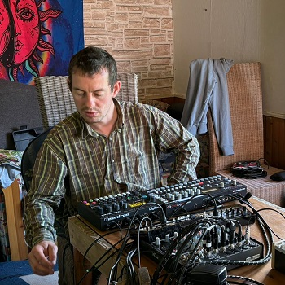

I believe that art and music play a crucial role in all cultures. Music can help nudge someone, either down the right or wrong path. It is very powerful and that's why I don't take my role as an artist lightly.
I strive to create generative music. Music that regenerates you by taking you through an emotional journey or by evoking better thoughts and ideas. My hope is that my music can help elevate your life. So if my music doesn't do that for you, you should look elsewhere. I don't have the answers, just my perspective.
I see the importance of positive, once-in-a-lifetime experiences. Experiences that change your life for the better. I want to help create those kinds of experiences for myself and other people through music. That's why I see the importance of improvised live acts, which are created in its very moment.
By sharing my vision of the good through music, I hope to make our lives just a little better.
The world needs more beauty.
My solo live act GenerativeGig is first and foremost for me. Putting together a new synth patch is where I get reinspired and recharge my creative energy for new performances and collaborations.
I try to be as vulnerable as possible in every musical project I partake in. I believe this is what true art is, no bullshitting around. Being alone can sometimes make this easier for me. I hope to express something truly real, a feeling or perspective that comes from inside me or out of this world.
Have a listen over on youtube.com/@GenerativeGig or soundcloud.com/generativegig.
Weird, beautiful and noisy. That is how I would describe our duo live act Primatsound in three words. At the core, we want to take you on a once-in-a-lifetime emotional and spiritual journey through sound.
Alien Paul has a deep fascination for sound and synthesis, and brings most of the sharper sounds and melodies to our sessions. This is the perfect counterpart to my more round and washed out preference to sound design.
Have a listen over on youtube.com/@GenerativeGig or primatsound.bandcamp.com.
The band Portal K09 consists of me, Paul Jatzky and Juppheater. We want to take you on a journey into alternate realities and tell untold stories, perhaps of the future.
Our music, however, isn't for the faint of heart. Be prepared to be taken aback by the deep cutting saxophone of Paul Jatzky and the noise rattling electric guitar of Juppheater. Oh, and me making beeps and boops whenever I can to complete the sound experience.
Debut album "Flucht vom Mars" (Escape from Mars) to be released this summer. Follow my instagram.com/generativegig for updates.
Bunn & Lundqvist is duo focused on creating sound in an improvised setting. With complex and ever-changing beats combined with melodic passages, we are striving to create meaningful musical vignettes.
Have a listen over on youtube.com/@GenerativeGig
If you would like to collaborate on any upcoming music projects or creative endeavors, please get in touch over instagram.com/generativegig or shoot me an email at info@generativegig.com.